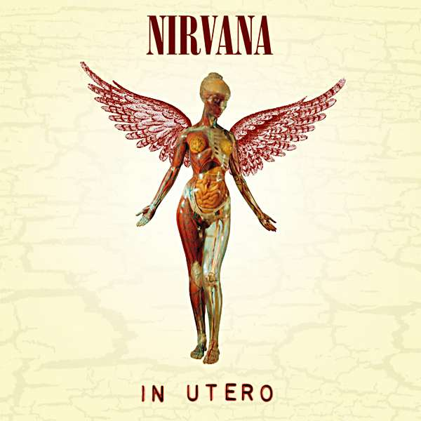

In Utero
 In Utero is the third and final studio album by the American grunge band Nirvana, released on September 13, 1993, on DGC Records. Nirvana intended the record to diverge significantly from the polished production of its previous album, Nevermind (1991). To capture a more abrasive and natural sound, the group hired producer Steve Albini to record In Utero during a two-week period in February 1993 at Pachyderm Studio in Cannon Falls, Minnesota. The music was recorded quickly with few studio embellishments, and the song lyrics and album packaging incorporated medical imagery that conveyed frontman Kurt Cobain's outlook on his publicized personal life and his band's newfound fame. Soon after recording was completed, rumors circulated in the press that DGC might not release the album in its original state, as the record label felt that the result was not commercially viable. Although Nirvana publicly denied the statements, the group was not fully satisfied with the sound Albini had captured. Albini declined to alter the album further, and ultimately the band hired Scott Litt to make minor changes to the album's sound and remix the singles "Heart-Shaped Box" and "All Apologies". Upon release, In Utero entered the Billboard 200 chart at number one and received critical acclaim as a drastic departure from Nevermind. The record has been certified five times platinum by the Recording Industry Association of America, and has sold 15 million copies worldwide
{kind=link}
Background
Nirvana broke into the musical mainstream with its major label debut, Nevermind, in 1991. Despite modest sales estimates—the band's record company, DGC Records, forecast that 50,000 copies would be sold—Nevermind became a huge commercial success, selling millions of copies and popularizing the Seattle grunge movement and alternative rock in general. However, all three members of Nirvana—singer and guitarist Kurt Cobain, bassist Krist Novoselic, and drummer Dave Grohl—later expressed dissatisfaction with the sound of the album, citing its production as too polished. Early in 1992, Cobain told Rolling Stone that he was sure that the band's next album would showcase "both of the extremes" of its sound, saying "it'll be more raw with some songs and more candy pop on some of the others. It won't be as one-dimensional [as Nevermind]". Cobain wanted to start work on the album in the summer of 1992. However, the band was unable to since Cobain and his bandmates lived in different cities, and the singer and his wife Courtney Love were expecting the birth of their daughter Frances Bean. DGC had hoped to have a new album by the band ready for a late 1992 holiday season release; since work on it proceeded slowly, the label released the compilation album Incesticide in December 1992. In a Melody Maker interview published in July 1992, Cobain told the English journalist Everett True he was interested in recording with Jack Endino (who had produced the group's 1989 debut album Bleach) and Steve Albini (former frontman of the noise rock band Big Black and producer for various indie releases). Cobain said he would then choose the best material from the sessions for inclusion on the group's next album. In October 1992, Nirvana recorded several songs (mainly as instrumentals) during a demo session with Endino in Seattle; many of these songs would later be re-recorded for In Utero. Endino recalled that the band did not ask him to produce its next record, but noted that the band members constantly debated working with Albini. The group recorded another set of demos while on tour in Brazil in January 1993. One of the recordings from this session, the long improvisational track "Gallons of Rubbing Alcohol Flow Through the Strip", was included as a hidden track on non-US copies of In Utero. Nirvana ultimately chose Albini to record its third album. Albini had a reputation as a principled and opinionated individual in the American independent music scene. While there was speculation that the band chose Albini to record the album due to his underground credentials, Cobain told Request magazine in 1993, "For the most part I wanted to work with him because he happened to produce two of my favorite records, which were Surfer Rosa [by the Pixies] and Pod [by The Breeders]." Inspired by those albums, Cobain wanted to utilize Albini's technique of capturing the natural ambiance of a room via the usage and placement of several microphones, something previous Nirvana producers had been averse to trying. Months before the trio had even approached Albini about the recording, rumors circulated that he was slated to record the album. Albini sent a disclaimer to the British music press denying involvement, only to get a call from Nirvana's management a few days later about the project. Although he considered the group to be "R.E.M. with a fuzzbox" and "an unremarkable version of the Seattle sound", Albini told Nirvana biographer Michael Azerrad he accepted because he felt sorry for the band members, whom he perceived to be "the same sort of people as all the small-fry bands I deal with", at the mercy of their record company. Before the start of recording sessions, the band sent Albini a tape of the demos it had made in Brazil. In return, Albini sent Cobain a copy of the PJ Harvey album Rid of Me to give him an idea of what the studio where they would record at sounded like.
{kind=link}
Music and Lyrics
Albini sought to produce a record that sounded nothing like Nevermind. He felt the sound of Nevermind was "sort of a standard hack recording that has been turned into a very, very controlled, compressed radio-friendly mix [...] That is not, in my opinion, very flattering to a rock band." Instead, the intention was to capture a more natural and visceral sound. Albini refused to double-track Cobain's vocals and instead recorded him singing alone in a resonant room. The producer noted the intensity of the singer's vocals on some tracks; he said, "There's a really dry, really loud voice at the end of 'Milk It' [...] that was also done at the end of 'Rape Me,' where [Cobain] wanted the sound of him screaming to just overtake the whole band." Albini achieved the album's sparse drum sound by simply placing several microphones around the room while Dave Grohl performed, picking up the natural reverberation of the room. Albini explained, "If you take a good drummer and put him in front of a drum kit that sounds good acoustically and just record it, you've done your job." Azerrad asserted in his 1993 biography Come as You Are: The Story of Nirvana that the music of In Utero showcased divergent sensibilities of abrasiveness and accessibility that reflected the upheavals Cobain experienced prior to the album's completion. He wrote, "The Beatlesque 'Dumb' happily coexists beside the all-out frenzied punk graffiti of 'Milk It,' while 'All Apologies' is worlds away from the apoplectic 'Scentless Apprentice.' It's as if [Cobain] has given up trying to meld his punk and pop instincts into one harmonious whole. Forget it. This is war." Cobain believed, however, that In Utero was not "any harsher or any more emotional" than any of Nirvana's previous records. Novoselic concurred with Azerrad's comments that the album's music leaned more towards the band's "arty, aggressive side"; the bassist said, "There's always been [Nirvana] songs like 'About a Girl' and there's always been songs like 'Paper Cuts'... Nevermind came out kind of 'About a Girl'-y and this [album] came out more 'Paper Cuts'". Cobain cited the track "Milk It" as an example of the more experimental and aggressive direction the band's music had been moving in the months prior to the sessions at Pachyderm Studio. Novoselic viewed the album's singles "Heart-Shaped Box" and "All Apologies" as "gateways" to the more abrasive sound of the rest of the album, telling journalist Jim DeRogatis that once listeners played the record they would discover "this aggressive wild sound, a true alternative record". Several of the songs on In Utero had been written years prior to recording; some of them dated back to 1990. With tracks like "Frances Farmer Will Have Her Revenge on Seattle", Cobain favored long song titles in reaction to contemporary alternative rock bands that utilized single-word titles. Cobain continued to work on the lyrics while recording at Pachyderm Studio. Nonetheless, Cobain told Darcey Steinke in Spin in 1993 that in contrast to Bleach and Nevermind, the lyrics were "more focused, they're almost built on themes." Michael Azerrad asserted that the lyrics were less impressionistic and more straightforward than in previous Nirvana songs. Azerrad also noted that "[v]irtually every song contains some image of sickness and disease". In a number of songs Cobain made reference to books he had read. "Frances Farmer Will Have Her Revenge on Seattle" was inspired by Shadowland, a 1978 biography of actress Frances Farmer, whom Cobain had been fascinated with ever since he read the book in high school. The song "Scentless Apprentice" was written about Perfume: The Story of a Murderer, a historical horror novel about a perfumer's apprentice born with no body odor of his own but with a highly developed sense of smell, and who attempts to create the "ultimate perfume" by killing virgin women and taking their scent. Cobain stated in a 1993 interview with The Observer that "for the most part [In Utero]'s very impersonal". The songwriter also told Q that year that the abundance of infant and childbirth imagery on the album and his newfound fatherhood were coincidental. However, Azerrad argued that much of the album contains personal themes, noting that Grohl held a similar view. Grohl said, "A lot of what he has to say is related to a lot of the shit he's gone through. And it's not so much teen angst anymore. It's a whole different ball game: rock star angst." Cobain downplayed recent events ("I really haven't had that exciting a life") and told Azerrad that he didn't want to write a track that explicitly expressed his anger at the media, but the author countered that "Rape Me" seemed to deal with that very issue. While Cobain said the song was written long before his troubles with drug addiction became public, he agreed that the song could be viewed in that light. "Serve the Servants" contains comments about Cobain's life, both as a child and as an adult. The opening lines "Teenage angst has paid off well/Now I'm bored and old" were a reference to Cobain's state of mind in the wake of Nirvana's success. Cobain dismissed the media attention given to the effect his parents' divorce had on his life with the line "That legendary divorce is such a bore" from the chorus, and directly addressed his father with the lines "I tried hard to have a father/But instead I had a dad/I just want you to know that I don't hate you anymore/There is nothing I could say that I haven't thought before". Cobain said he wanted his father to know he didn't hate him, but had no desire to talk to him
{kind=link}
{kind=link}
Release
To avoid over-hyping the album, DGC Records took a low-key approach to promoting In Utero; the company's head of marketing told Billboard before the album's release that the label was taking a promotional strategy similar to that of Nevermind, and explained that the label would "set things up, duck, and get out of the way". The label aimed its promotion at alternative markets and press, and released the album on vinyl record as part of this strategy. In contrast to the previous album, the label did not release any of In Utero's singles commercially in the United States. DGC sent promo copies of the album's first single "Heart-Shaped Box" to American college, modern rock, and album-oriented rock radio stations in early September, but the label did not target Top 40 radio. Despite the label's promotion, the band was convinced that In Utero would not be as successful as Nevermind. Cobain told Jim DeRogatis, "We're certain that we won't sell a quarter as much, and we're totally comfortable with that because we like this record so much." In Utero was released on September 13, 1993 in the United Kingdom, and on September 14 in the United States; it was initially only available in vinyl record and cassette tape formats, with the American vinyl pressing limited to 25,000 copies. Although the album was issued on compact disc in the UK on September 14, a full domestic release did not occur until September 21. In Utero debuted at number one on the Billboard 200 album chart, selling 180,000 copies in its first week of release. Meanwhile, retail chain stores Wal-Mart and Kmart refused to sell the album. According to The New York Times, Wal-Mart claimed it did not carry the album due to lack of consumer demand, while Kmart representatives explained that the album "didn't fit within our merchandise mix". In truth, both chains feared that customers would be offended by the artwork on the album's back cover. DGC issued a new version of the album with reworked packaging to the stores in March 1994. This version featured edited album artwork, listed the name of "Rape Me" as "Waif Me", and included a Scott Litt remix of "Pennyroyal Tea". A spokesperson for Nirvana explained that the band decided to edit the packaging because as kids Cobain and Novoselic were only able to buy music from the two chain stores; as a result they "really want to make their music available to kids who don't have the opportunity to go to mom-and-pop stores". In Utero received acclaim from critics, although some reviews were mixed. Time's Christopher John Farley stated in his review of the album, "Despite the fears of some alternative-music fans, Nirvana hasn't gone mainstream, though this potent new album may once again force the mainstream to go Nirvana." Rolling Stone reviewer David Fricke gave the album four-and-a-half out of five stars and wrote, "In Utero is a lot of things – brilliant, corrosive, enraged and thoughtful, most of them all at once. But more than anything, it's a triumph of the will." Entertainment Weekly reviewer David Browne (who gave the album a rating of B+) commented "Kurt Cobain hates it all", and noted that the sentiment pervades the record. Browne argued, "The music is often mesmerizing, cathartic rock & roll, but it is rock & roll without release, because the band is suspicious of the old-school rock cliches such a release would evoke." NME gave the album an eight out of ten rating. However, reviewer John Mulvey had doubts about the record; he concluded, "As a document of a mind in flux — dithering, dissatisfied, unable to come to terms with sanity — Kurt [Cobain] should be proud of [the album]. As a follow-up to one of the best records of the past ten years it just isn't quite there." Ben Thompson of The Independent commented that in spite of the album's more abrasive songs, "In Utero is beautiful far more often than it is ugly", and added, "Nirvana have wisely neglected to make the unlistenable punk-rock nightmare they threatened us with." In his consumer guide for The Village Voice, critic Robert Christgau gave In Utero an A− rating that he later changed to an A, indicating "a record that rarely flags for more than two or three tracks. Not every listener will feel what it's trying to do, but anyone with ears will agree that it's doing it". Several critics ranked In Utero as one of the best releases of the year. It placed first and second in the album categories of the Rolling Stone and Village Voice Pazz & Jop year-end critics' polls, respectively. Additionally, The New York Times included it on its list of the top ten albums of the year. The album was nominated for Best Alternative Music Album at the 1994 Grammy Awards.
{kind=link}
{kind=link}
Track List
| Order | Title | Time |
|---|---|---|
| 1 | Serve the Servants | 3:36 |
| 2 | Scentless Apprentice | 3:48 |
| 3 | Heart-Shaped Box | 4:41 |
| 4 | Rape Me | 2:50 |
| 5 | Frances Farmer Will Have Her Revenge | 4:09 |
| 6 | Dumb | 2:32 |
| 7 | Very Ape | 1:56 |
| 8 | Milk It | 3:55 |
| 9 | Pennyroyal Tea | 3:37 |
| 10 | Radio Friendly Unit Shifter | 4:51 |
| 11 | Tourette's | 1:35 |
| 12 | All Apologies | 3:51 |